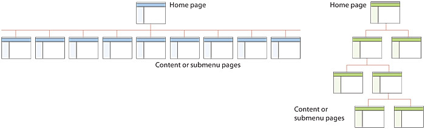
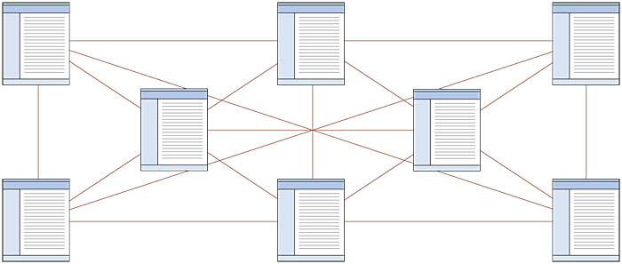

Thinking of design and developing a website. Where would you like to start? Open a text editor and start coding? No, absolutely not. There are many things, that's needed to be done before you get started with designing and developing part for a website.
The entire process to create a website can typically be divided into 8 steps. This process is often called as Web development life cycle or web development process.
Understand client's need
There are a number of important questions that's needed to be answered by your client before you get started to code.
- Get to know to the purposes the website serves. In other words, understand the business of your client. What they offer to their customers. How your client's business works. Then craft your website, so that your client's customers can easily understand the content and data present on the website and your clients can achieve their business goals.
- Understand who will use the website. This is related to the age, gender and the computer literacy of your client's customers.
- Understand the computing environment from which your client and their customers access your website. Like the desktop, laptop, tablet, smart phone.
- Who owns and authors the information on the website? Ask your client weather they can provide the information needed for the website or we have to craft the content.
- Ask whether your client has or needs the social media account on Facebook, Instagram, Twitter, branded email account. Whether they need an SSL Certificate for the website.
Deep Research and Analysis
At this stage, understand the industrial standard you need to follow for the website. That is, dividing the website into different web pages and sections to meet the services and the products offered by your client. Search on the web for the websites which serve a similar purpose as your client’s products and services. Understand their website structure.
Know your target audience, competitors for your client's, the motto of the project and the outcome.
Find appropriate graphics, features.
Understand what information is useful for your client's customers.
Decide on content, functionality, information covered and processing required.
Planning
At this stage, we define deliverables, sprints and Grantt charts with projected timeline and resources to accomplish it.
Varied other major decisions such as formulating the sitemap, wireframing, planning the layout, UI / UX, selecting the right technology stack, mokeups etc., are made at this stage.
Design
Create custom graphics, logo, colors, typography, animation, buttons, dropdown menus and more based on the project needs.
Development
This is the stage form where the coding part starts, but before that you also need to take care about the layout of the website.
Layouts
Websites are designed using any of several different types of layouts, including linear, hierarchical, and Webbed. Each layout links, or connects, the Web pages in a different structure to define how users navigate through the site and view the Web pages. You should select a layout for your Web site based on how users will most easily navigate through the site to complete tasks and view the Web site contents.
Linear website layout
A linear Web site layout connects Web pages in a straight line. A linear Web site layout connects Web pages in a straight line. A linear Web is appropriate if the information on the Web pages should be read in a specific order.
Hierarchical website layout
A hierarchical Web site layout connects Web pages in a tree-like structure. A hierarchical Web site layout works well on a site with a main index or table of contents page that links to all other Web pages. With this layout, the main index page would display general information and secondary pages include information that is more detailed.
Webbed website layout
A Webbed Web site layout has no set structure. A Webbed Web site layout works best on Web sites with information that does not need to be read in a specific order and with many navigation options that users can select.
Most Web sites are a combination of the linear, hierarchical and Webbed layouts. Some of information on the Web site might be organized hierarchically from an index page; other information might be accessible from all areas of the site while other information might be organized linearly to be read in a specific order.
Using a combination of the three layouts is appropriate, if it helps users navigate through the site easily.
Front-end development
Here you take care of web page title, headings, hr, paragraphs, ordered and unordered lists, page length and information.
Back-end development
Create the server-side applications, databases, integrate business logic and everything that works under the hood.
Testing and Deployment
At this stage, you need to perform certain tests to make sure the website looks and works as expected.
- Functionality test
- Usability test
- Compatibility test
- Performance test
Review the website content, functionality, usability, spelling, broken links and correct links, check graphics, confirm display properly and are linked correctly, testing forms and interactive elements, speed the loading, print each page to check how pages print, try different web browsers.
Post-deployment and maintenance
Provide the clients with the source code and project documentation, work on their feedback and post-deployment support and maintenance.
Provide new updates when possible.
Update info content by removing old or adding new once.
Website monitoring
Web server keeps the logs about website usage. Monitor the website about how its resources are used. What pages are viewed most. How client's customers interact with the website.
If you like the article do share on Twitter.